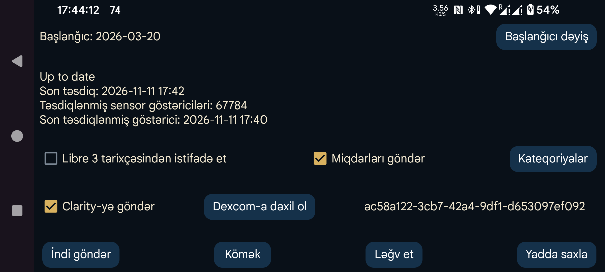

Məlumatları Dexcom Clarity-yə göndərin.
Dexcom-a daxil ol: Veb-brauzer vasitəsilə Dexcom hesabına OAuth girişi.
Clarity-yə göndər: Dexcom hesabına daxil olduqdan sonra Clarity-yə məlumat göndərilməsini aktivləşdirir.
Libre 3 tarixçəsindən istifadə et: Libre 3 sensorunun Axın göstəriciləri əvəzinə Tarixçə göstəricilərini Clarity-yə göndərir.
Miqdarları göndər: Miqdarları və barmaqdan qan götürülərək ölçülmüş qlükoza göstəricilərini göndərir. Bunun üçün əvvəlcə aşağıda hər miqdar etiketinin hansı kateqoriyaya aid olduğunu seçin.
Kateqoriyalar: Etiketlərin hansının «Teztəsirli insulin», «Uzuntəsirli insulin», «Qlükoza ölçməsi» və ya «Karbohidrat» olduğunu təyin edin.
Başlanğıcı dəyiş: Dexcom Clarity-yə məlumatların hansı tarixdən göndəriləcəyini dəyişir.
İndi göndər: Məlumatları dərhal Dexcom Clarity-yə göndərir.